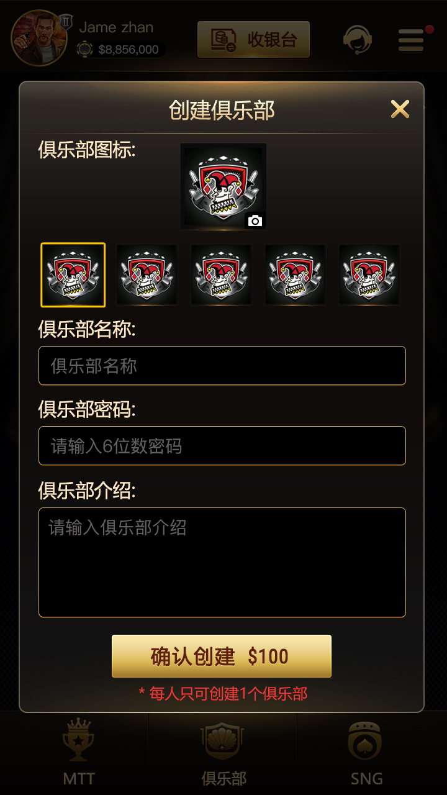

填写资料
俱乐部图标、名称、密码和介绍。

俱乐部图标、名称、密码和介绍。
create_club.h 组织请求并调用社交服务。
俱乐部层级及相关配置由检查接口返回。
按经典德州、AOF 或 6+ 短牌浏览。

截图展示俱乐部牌桌卡片、盲注、人数、持续时间和创建/快速入桌入口。分类中包含经典 Holdem、AOF 和 6+ 短牌。
页面不使用 WPK、PokerStars 等其他品牌词冒充产品，也不把未在仓库中验证的联盟后台、支付或运营功能写成既有能力。
继续查看 C++ 游戏核心、客户端消息和牌谱专题。